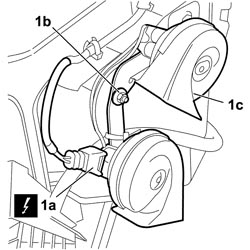

5550B30 L/H OR R/H HORN (ONE) - R+R
- Path
- Procedures > 55 ELECTRICAL EQUIPMENT > 5550 WARNING AND MANOEUVRING INDICATORS > 5550B HORNS > 5550B30 L/H OR R/H HORN (ONE) - R+R
- Kind
- repair procedure (removal / refitting; the operation number is the code)
- Applies to
- all engines; all production periods
- Interactive page
- https://sloeber94.github.io/elrnDB-fCrm/en/#/194000765
Applies to: all engines; all production periods
 Removing
Removing
 Refitting
Refitting- Turn the ignition key to the OFF position.
- Open the bonnet.
- Disconnect the negative battery terminal.
Description | Connector | |
|---|---|---|
BATTERY |
- Position the vehicle on a lift.
Op. 7055B54 UNDER ENGINE PROTECTION/GUARD - R.R.
1. Working on the left of the vehicle, in the area in front of the windscreen washer reservoir, disconnect electrical connection (1a), unscrew nut (1b) and recover the washer. Then remove horn (1c) from the vehicle.
Description | Connector | |
|---|---|---|
1a | SINGLE-TONE HORN |

Applies to: all engines; all production periods
Refitting
Removing- Check that the horn is not damaged.
- Position the horn in its seat and tighten the nut
- Connect the electrical connection for the horn.
Description | Connector | |
|---|---|---|
SINGLE-TONE HORN |
Op. 7055B54 UNDER ENGINE PROTECTION/GUARD - R.R.
- Connect the negative battery terminal.
Description | Connector | |
|---|---|---|
BATTERY |
- Check that the horn is working properly.